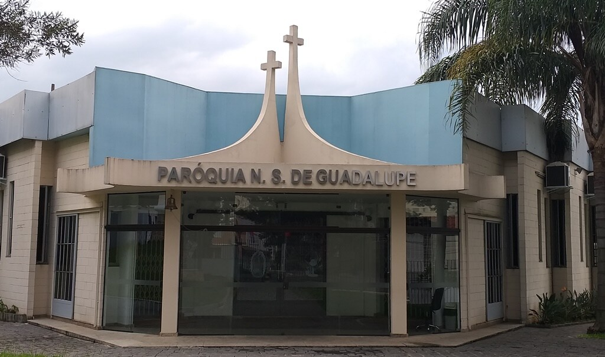

Missas
- Segunda-feira
- 7h30*
- Terça a sábado
- 8h
- Domingo
- 8h, 10h e 18h
* A Missa de segunda-feira consta no site paroquial, mas não na ficha da diocese. Confirme com a secretaria antes de ir.
A Eucaristia é a fonte e o ápice da vida cristã (CIC 1324).
Não foi possível tocar o canto.
Venha celebrar a Missa ou passar um tempo em oração.
Rua República do Iraque, 1839 · Campo Belo

* A Missa de segunda-feira consta no site paroquial, mas não na ficha da diocese. Confirme com a secretaria antes de ir.
A Eucaristia é a fonte e o ápice da vida cristã (CIC 1324).
De terça a sábado, após a Missa das 8h.
Na Reconciliação, recebemos o perdão de Deus e nos reconciliamos com a Igreja (CIC 1422).
Horários habituais: site paroquial e Diocese de Santo Amaro, páginas sem data de atualização, consultadas em 26/11/2026. Confirme possíveis alterações com a secretaria.
A festa litúrgica da padroeira é em 12 de dezembro. A programação local ainda não foi confirmada nesta agenda. Acompanhe o Instagram da paróquia para saber mais.
A paróquia convidou o bairro para sua festa tradicional nos quatro fins de semana de junho. Convite da paróquia.
Antes de retomar as atividades do ano, as pastorais se reuniram em retiro para rezar e renovar seu compromisso de serviço. Registro da paróquia.
A comunidade anunciou um tríduo, quermesse e Missa solene para a festa da padroeira. Convite da paróquia.
No Batismo, nascemos para a vida em Cristo e somos acolhidos na Igreja (CIC 1213). Para batizar seu filho, pergunte à secretaria sobre a preparação de pais e padrinhos, os documentos e as datas.
No Matrimônio, os esposos firmam uma aliança para toda a vida. Entre batizados, essa aliança é sacramento (CIC 1601). Se vocês vão se casar na Igreja, a secretaria pode orientar sobre a preparação e os documentos.
Antes de ter igreja, a comunidade do Campo Belo celebrava a Missa na garagem da casa dos pais do Pe. Newton José Crippa, seu primeiro vigário.
Dom Paulo Rolim Loureiro, bispo auxiliar de São Paulo, abençoa a pedra fundamental. Uma semana depois, Frei Mojica celebra no terreno a primeira Missa em honra da Virgem de Guadalupe.
A comunidade inaugura a igreja construída pelo paroquiano Antonio Rosa de Mendonça. Junto dela se ergue a torre doada por Giovanni Adamo.
Um incêndio destrói a primeira igreja. A torre, a pia batismal e o ícone de Guadalupe são preservados. Com o Pe. Paulo Homero Gozzi, os moradores erguem outra igreja no mesmo terreno.
A paróquia completa 70 anos. Em seu site, a comunidade apresenta um projeto de ampliação que prevê preservar a torre.
A torre guarda a memória da primeira igreja.
O acervo paroquial conserva uma foto da igreja antiga e registros da torre e da pia batismal que sobreviveram ao incêndio.
História e fotografias: Nossa História e Reforma, do site paroquial.

Segundo o relato de Guadalupe, Maria chama Juan Diego pelo nome e lhe confia uma missão. Ela o escuta e conta com ele, mesmo quando ele se julga pequeno demais. Essa atenção aos pequenos lembra o Magnificat (Lc 1,46–55).
Como imitá-la: Escute alguém que costuma passar despercebido. Dê tempo para que conte o que pensa, sem completar a resposta por ele.
Maria pede um templo onde os aflitos possam encontrar consolo. É o mesmo cuidado de quem, no Evangelho, vai ao encontro de Isabel e fica com ela por cerca de três meses (Lc 1,39–56).
Como imitá-la: Visite nesta semana alguém que esteja sozinho. Pergunte de que ajuda precisa e combine algo que você possa fazer.
Juan Diego sai à procura de um sacerdote para seu tio doente. Maria vai ao seu encontro e o consola. Em Caná, ela também percebe a necessidade dos outros e a leva a Jesus (Jo 2,1–11).
Como imitá-la: Reze por uma pessoa doente pelo nome. Depois, ligue para ela ou ofereça ajuda a quem cuida dela.
O bispo pede um sinal. Maria envia Juan Diego com rosas colhidas na colina. Segundo o relato, ao abrir o manto diante do bispo, ele revela a imagem da Virgem. Ao enviá-lo, Maria mostra confiança. No Evangelho, Isabel a chama de bem-aventurada por crer na palavra de Deus (Lc 1,45).
Como imitá-la: Retome em oração uma boa decisão que você adiou por medo. Escolha um primeiro passo e dê esse passo hoje.
«Paróquia é a casa, por excelência, de todos os fiéis, onde eles devem encontrar o Cristo Ressuscitado.»
Site da paróquia
Leia o relato de Guadalupe na biografia de São Juan Diego, na Santa Sé. A Igreja venera Maria de modo distinto da adoração devida somente a Deus (CIC 971).
Nossa Senhora de Guadalupe, rogai por nós.
Rua República do Iraque, 1839 · Campo Belo, São Paulo · CEP 04611-004
Terça a sexta, 8h–12h e 14h–18h · Sábado, 8h–12h
(11) 5041-9829 · nsdeguadalupe@santoamaro.org.br
Expediente do site paroquial, consultado em 26/11/2026. A ficha diocesana não indica o intervalo de almoço; confirme antes de ir nesse período.
Rua República do Iraque, 1839 · Campo Belo, São Paulo